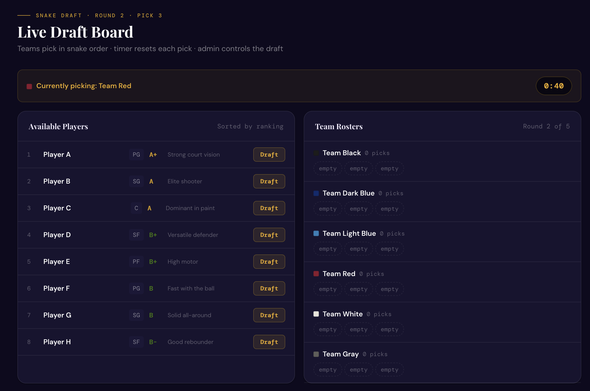
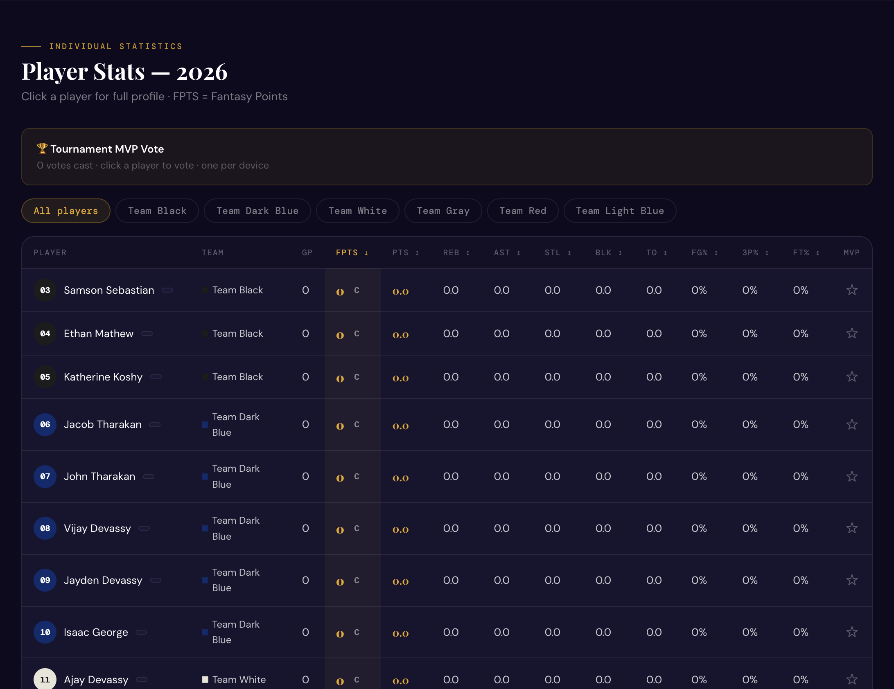
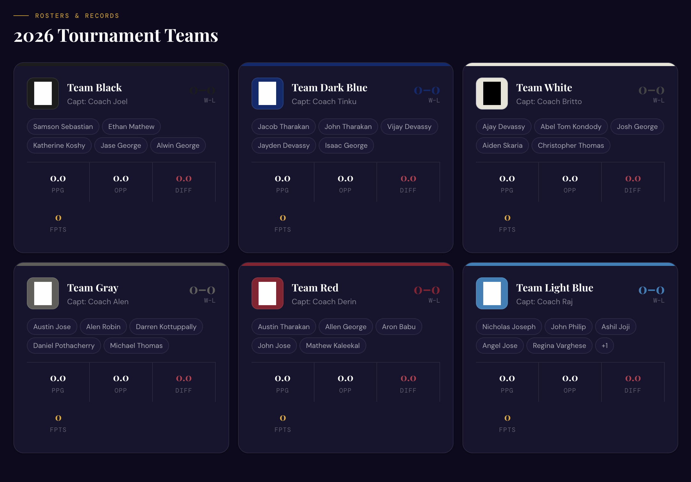
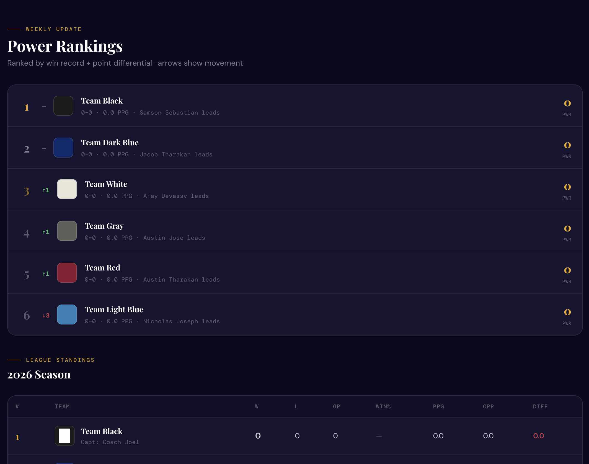
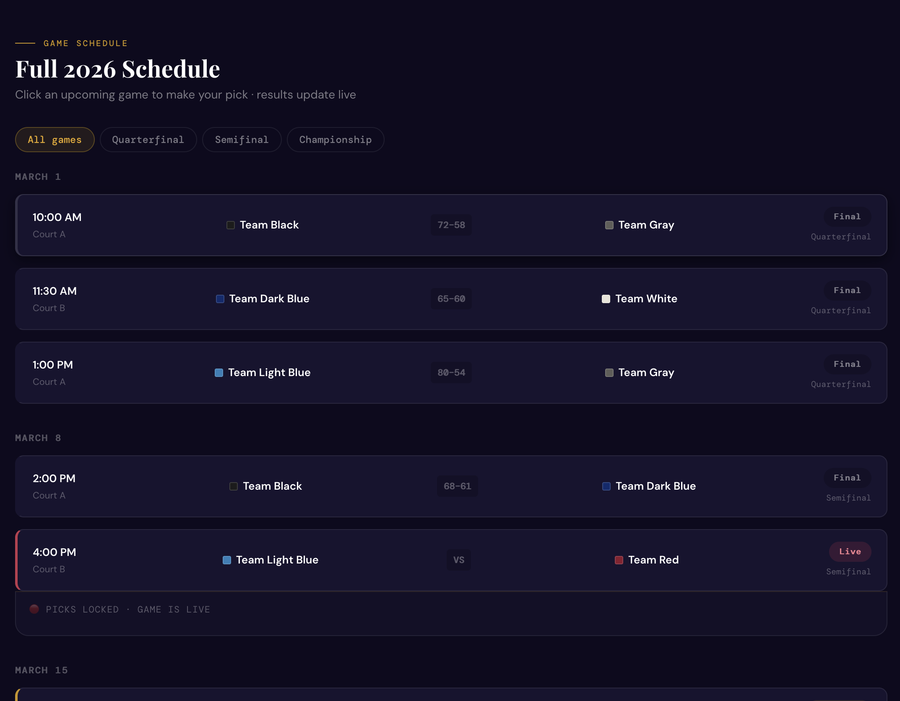
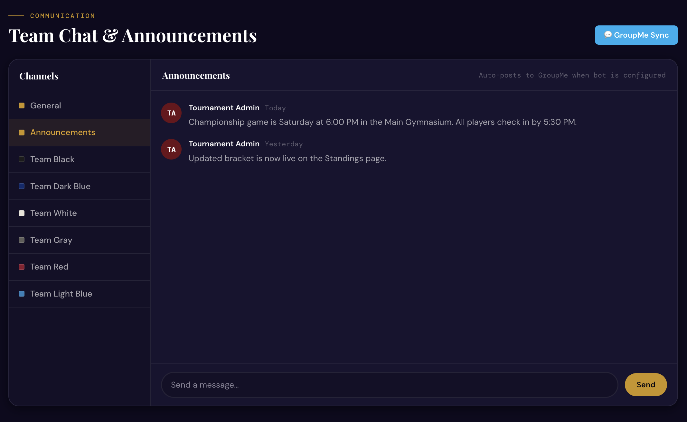

Why it exists
The tournament used to run on paper score sheets and scattered group chats. I built one place for it. Players register and pay online, captains draft teams live, and once games start every score and stat updates on everyone’s phone without a refresh.

Snake draft board 
Stat leaderboards 
Team pages 
Power rankings 
Schedule 
AI commissioner chat
The draft clock that lied
My first draft timer ran on each captain’s phone. Phones drift, so during the live draft some screens showed ten seconds left when there were really two.
I rewrote it so a single clock in the database is the only source of truth and every phone just displays it. That was my first real lesson in how devices disagree about time.
The same Realtime setup drives the score ticker, the bracket that advances itself, one-vote-per-device MVP polls and anonymous pick’em predictions.
Everything it does
- Live score tickerAcross the top of every page.
- Playoff bracketAdvances as the admin enters scores.
- Fantasy pointsPTS + 1.2 REB + 1.5 AST + 3 STL + 3 BLK minus turnovers.
- Player profilesRadar charts and stat bars in Recharts.
- Pick’em and MVP votingNo login, one vote per device.
- RegistrationWith Zelle payment and waiver tracking.
- GroupMe syncAnnouncements reach the group chat people already use.
- Admin panelGames, players, teams and announcements in one place.
Next, a real scoreboard
I have a physical electronic scoreboard, and the plan is an ESP32 between it and the site, so a score entered online flips the digits on the board. That means serial communication, driving the display, and keeping the signal clean. After that, the bracket should seed itself from regular-season results.